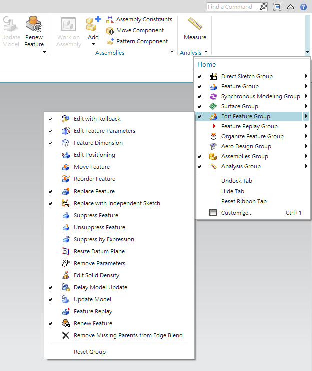
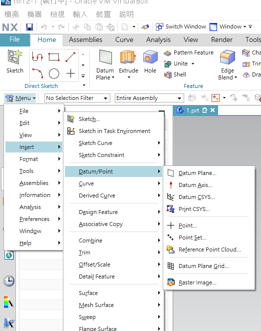

week6-9 <<
Previous Next >> proe開發緣起
week10-14
week10
由組長建立分組網站並且請組員加入分組網站
1.由組長創建分組網站https://s40723221.github.io/cad2019bg2/content/index.html和分組倉儲https://github.com/s40723221/cad2019bg2
2.由組員透過fork加入創建之分組網站
3.加入後用git clone submodules 組別倉儲網址
4.以git pull request的方式進行推送(必須由組長認證推送內容才可以成功推送)
5.閱讀nx12及nx3的操作手冊和教程
操作影片:
nx12下載的方式與利用virtual box開啟方式
nx12及nx3下載點和資料參考點(下載必須要使用虛擬主機板本): http://mde.tw/cad2019/content/NX.html
VirtualBox下載點: https://briian.com/5690/
操作影片:
繪圖軟體安裝及基本設定
nx12及nx3下載點和資料參考點: http://mde.tw/cad2019/content/NX.html
solidwork下載點和資料參考點: http://mde.tw/cad2019/content/Solidwo...
VirtualBox下載點: https://briian.com/5690/
pro/e官方網站: https://www.ptc.com/en/products/cad/p...
pro/e試用版載點: https://www.ptc.com/tw/products/cad/c...
inventor試用版載點: https://www.autodesk.com/products/inv...
autodesk官方網站: https://www.autodesk.com.tw/
操作影片:
week12
組員個別整理電子書內容
參考NX設計電子書第四章內容: http://mde.tw/cad2019/downloads/NX-12-for-Engineering-Design.pdf
CH4
本章討論的是NX12的3D建模基礎教學，NX12如同其他的繪圖軟體同樣也可以透過左邊的歷史紀錄去更改之前的零件尺寸，本章節也會介紹一些常見的功能，像是長出、旋轉繞形、取線的修剪、圓柱體和圓錐體等圖形的繪製。
4-1功能類型
功能類型包括了六種:圖形、特徵的參照、特徵的掃描、刪除特徵功能、提取功能、自訂義功能。
(如下圖所示:可以在NX12的介面處右方下拉箭頭挑選常用的功能)

4.1.1圖元
這些功能列表可以得到如:方塊或者是圓柱體、錐形、球體等圖形，並且讓使用者可以後續再做其他的建模。
4.1.2參照功能
可以用下列圖片中的功能來創建參考點或者是參考軸、參照平面、參照座標方便去定義其他的圖形位置。

4.1.3掃描功能
在NX左方的MENU功能表中的insert(插入)中design feature(設計特徵)的功能達到如同:長出、旋轉繞形、延曲線掃描、掃描混成等功能。
4.1.4刪除特徵功能
如上圖所示可以使用:如同孔、鍵座、凹槽等等切除特徵的功能都可以從上圖中找到。
4.1.5提取特徵功能
1.在NX12中提取特徵的功能有如同:薄殼、位移特徵、加厚特徵等功能。
2.在NX左方的MENU功能表中的insert(插入)中的associative copy中的extract geometry(提取幾何或複製幾何)可以複製一個實體(該實體由多個特徵集合而成)。
3.在NX左方的MENU功能表中的insert(插入)中的offset/scale(位移/比例)中，可以看到位移、薄殼、增加厚度的功能。
4.在NX左方的MENU功能表中的insert(插入)中的surface(面)中，可以看到曲線及曲面的繪製功能在功能表的此處。
4.1.6自訂義功能
在NX左方的MENU功能表中的insert(插入)中的design feature中的user defined可以自訂義自己想要的介面功能。
零組件繪製:
1.繪製錐形軸:sketch選取平面>選取好平面後繪製草圖中的圓形(直徑為4 (inch)>利用extrude(長出)(高度為18 (inch)>點選insert中的design feature中con(錐體)並且選取直徑和Z軸>在base diameter中輸入4 (inch)、top diameter中輸入6 (inch)、height中輸入10 (inch)>在錐體直徑較大的一端繪製一(直徑為6)和一(高度為20)的圓柱體點擊ok就完成了。
操作影片:
2.繪製葉輪:sketh選取平面>點選menu中的insert中的direct sketch>創建兩個point其座標分別是(0,0,0)及(11.75,6,0)>使用arc(弧線)繪製如影片中的形狀>使用insert裡面的design feature 中的con(錐體)並且記得要將放置點設置於座標(14,0,0)的位置>設置錐體尺寸base diameter (底部直徑)=15、Top Diameter(頂部直徑) = 8、Height(高度) = 16.25>利用長出將剛剛繪製好的葉輪草圖長出實體(厚度為12)>利用insert> Associative Copy>Pattern Feature(陣列)>數量為五個分布角度為72度點擊ok就完成了。
操作影片:
3.繪製底座箱體:sketh選取平面>先繪製立面和立面上的斜邊特徵>繪製左邊圓型特徵(以旋轉長出的方式繪製)>挖除圓形孔>繪製長在圓形孔內的特徵(包括圓柱體及四邊長方體)>將內部小圓柱體的螺紋補上(螺紋的小徑為0.395)>在左方圓柱體的上方加上3個半圓特徵並且在上方打上小孔>將右方的平面補上並且在上面打上小孔>在兩個小孔中也必須繪製螺紋(螺紋的小徑為0.395)>繪製上方的斜形肋特徵>繪製完之後檢查一下是否正確就完成了。
操作影片:
webot tutorial - 1
1.先創建儲存檔案的資料夾
2.創建一個新生成的世界
3.創建好之後先用加號加入一個木箱並更改其尺寸
4.添加完成了之後我們要複製並貼上木箱直到場面上有三個木箱
5.添加e-puck robot並且啟動試試看是否可以運動
6.增加控制器操縱e-puck robot添加指令後機器人應該會直走並旋轉後停下
7.修改這個控制器的功能貼上另一個指令如果成功機器人因該會緩慢行走
8.修改機器人馬達的動力使其達到原地旋轉
操作影片:
v-rep tutorial - bubbleRob
1.創建一個圓球當作機器人的本體
2.將感測器設置好並裝上機器人然後去定義其範圍
3.將左輪裝上並且把座標調整到適當的位置，調整完之後將參數都設置好
4.調整好之後我們需要裝上右輪此時可以使用複製貼上的方式裝上去
5.裝好之後因為機器人無法單靠兩輪站立我們需要增加第三個支點
6.增加一個小球當作機器人的支點
7.增加動力源並且設置好動力源的座標
8.左右輪也必須加上馬達當作動力源
9.設定都好了之後記得要將剛剛設定的東西都拉到bubbleRob底下才會跟著本體作動
10.設定障礙物將本體圍繞起來
11.設定運動時的動態圖表
12設定攝像頭以便機器人移動時看到與他平行的影像
13.將BubbleRob的程式碼功能打開並且將程式碼複製貼入到裡面
14.正常狀態下機器人因該會在感測器照射到物體的情況下往後退並迴避
操作影片:
week13
第13周之前的內容報告
webots 所有 tutorial :
tutorial 1
tutorial 1 :https://cyberbotics.com/doc/guide/tutorial-1-your-first-simulation-in-webots
1.先創建儲存檔案的資料夾
2.創建一個新生成的世界
3.創建好之後先用加號加入一個木箱並更改其尺寸
4.添加完成了之後我們要複製並貼上木箱直到場面上有三個木箱
5.添加e-puck robot並且啟動試試看是否可以運動
6.增加控制器操縱e-puck robot添加指令後機器人應該會直走並旋轉後停下
7.修改這個控制器的功能貼上另一個指令如果成功機器人因該會緩慢行走
8.修改機器人馬達的動力使其達到原地旋轉
操作影片:
tutorial 2
tutorial 2 網址:https://cyberbotics.com/doc/guide/tutorial-2-modification-of-the-environment
1.將之前的模擬另存成新的檔案
2.將之前建立的場地刪除
3.自己新增一個新的場地並且更改大小
4.開始創建球體按照影片新建好節點
5.更改好球體的位置及座標
6.為各個節點作命名以便後面可以使用def use機制做設定
7.學習使用def use機制創建並且設定四面圍繞場地的牆壁
8.創建新的牆壁節點並且和球體一樣對節點命名(不可以設定物理節點否則牆壁在模擬時會掉落)
9.調整好位置後即可以做另外三面牆壁
10.完成後開始模擬確定是否可以正常啟用
操作影片:
tutorial 3
tutorial 3 網址:https://cyberbotics.com/doc/guide/tutorial-3-appearance
1.將之前的模擬打開並且另存新模擬
2.將牆壁的外觀節點打開
3.將顏色的部分調成藍色
4.更改球體的材質外觀
5.打開球體的外觀節點
6.將影片中的路徑打開並把檔案導入
7.成功的話球體會變成類似磚塊的外觀
8.打開view中的感測器範圍功能
9.打開後就可以觀測到感測器的範圍
10.檢查後若模擬都沒問題就ok了
操作影片:
tutorial 4
tutorial 4 網址:https://cyberbotics.com/doc/guide/tutorial-4-more-about-controllers
1.將之前的模擬打開並另存一個新的模擬
2.為機器人新增一個新的控制器編輯器
3.將 webots 官方中的指令複製下來並且貼入編輯器中
4.將程式導入機器人的控制器節點中
5.存檔並且重新啟動模擬
6.開始模擬現在機器人因該會自動避開障礙物
7.如果模擬沒問題那就ok了
操作影片:
tutorial 5
tutorial 5 網址:https://cyberbotics.com/doc/guide/tutorial-5-compound-solid-and-physics-attributes
1.將之前的模擬打開並且另存新模擬
2.一樣串建solid實體節點
3.在children節點下必須要先創建group節點
4.按照之前的步驟創建啞鈴形狀的物體(在 webots tutorial 中有流程圖)
5.創建完成之後調整座標位置和擺放的角度
6.完成之後設定啞鈴的質量大小和摩擦力
7.嘗試模擬看看如果沒問題就ok了
操作影片:
tutorial 6
tutorial 6 網址:https://cyberbotics.com/doc/guide/tutorial-6-4-wheels-robot
1.將場地上的物體，都刪除只留下牆面和場地
2.開始新增車子(按照上個tutorial的方式新建)
3.車子的創造節點流程圖可以在官網中找到
4.創建完成車體和第一顆輪胎後先設定第一顆輪胎的馬達轉軸軸向
5.完成設定之後緊接著創建其他三顆輪胎(記得軸向都要改變)
6.完成之後就可以設定馬達的名稱了(名稱必須要正確不然程式會抓不到)
7.開始設定感測器
8.感測器使用的是distance sensor距離感測器
9.設定完後必須要建立感測器的實體並且更改其位置和座標
10.感測器在設定位置時 x軸項必須要朝車體的前方才能正確感測
11.完成之後車子因該會自動避開障礙物
12.確定可以正確模擬後就ok了
操作影片:
week6-9 <<
Previous Next >> proe開發緣起